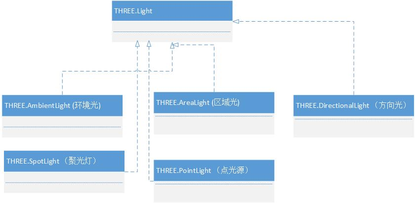
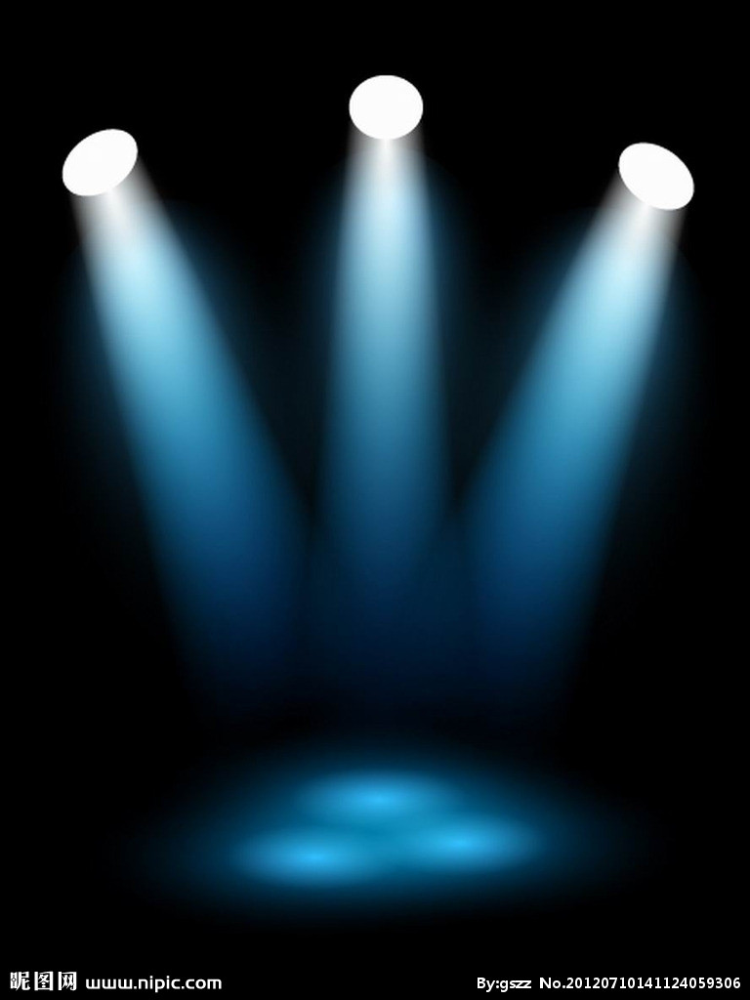
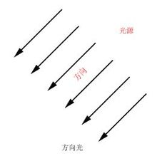
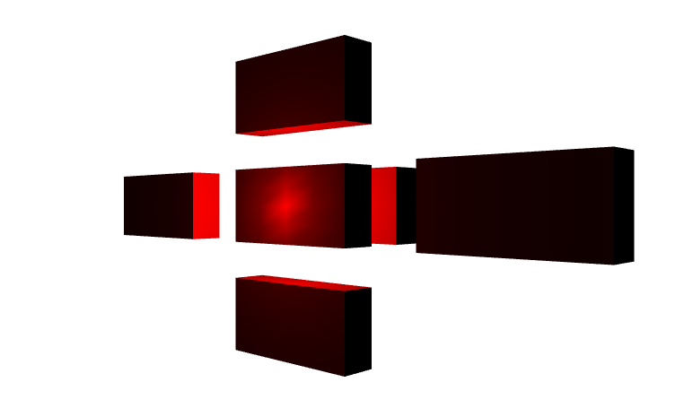
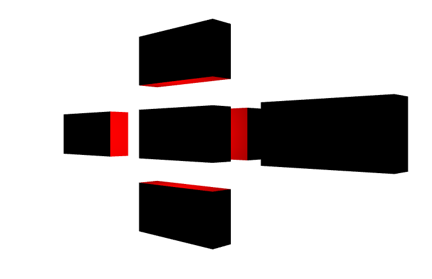

1、 光源基类
在Threejs中，光源用Light表示，它是所有光源的基类。它的构造函数是：
THREE.Light ( hex )
它有一个参数hex，接受一个16进制的颜色值。例如要定义一种红色的光源，我们可以这样来定义：
Var redLight = new THREE.Light(0xFF0000);
THREE.Light只是其他所有光源的基类，要让光源除了具有颜色的特性之外，我们需要其他光源。看看，下面的类图，是目前光源的继承结构。

可以看出，所有的具体光源都继承与THREE.Light类。
2、 环境光
环境光是经过多次反射而来的光称为环境光，无法确定其最初的方向。环境光是一种无处不在的光。
环境光用THREE.AmbientLight来表示，它的构造函数如下所示：
THREE.AmbientLight( hex )
它仍然接受一个16进制的颜色值，作为光源的颜色。环境光将照射场景中的所有物体，让物体显示出某种颜色。环境光的使用例子如下所示：
var light = new THREE.AmbientLight( 0xff0000 );
scene.add( light );
只需要将光源加入场景，场景就能够通过光源渲染出好的效果来了。
3、 点光源
点光源：由这种光源放出的光线来自同一点，且方向辐射自四面八方。例如蜡烛放出的光，萤火虫放出的光。
点光源用PointLight来表示，它的构造函数如下所示：
PointLight( color, intensity, distance )
这个类的参数解释一下：
Color：光的颜色
Intensity：光的强度，默认是1.0,就是说是100%强度的灯光，
distance：光的距离，从光源所在的位置，经过distance这段距离之后，光的强度将从Intensity衰减为0。 默认情况下，这个值为0.0，表示光源强度不衰减。
4、聚光灯
聚光灯：这种光源的光线从一个锥体中射出，在被照射的物体上产生聚光的效果。使用这种光源需要指定光的射出方向以及锥体的顶角α。聚光灯示例如图所示：

聚光灯的构造函数是：
THREE.SpotLight( hex, intensity, distance, angle, exponent )
函数的参数如下所示：
Hex：聚光灯发出的颜色，如0xFFFFFF
Intensity：光源的强度，默认是1.0，如果为0.5，则强度是一半，意思是颜色会淡一些。和上面点光源一样。
Distance：光线的强度，从最大值衰减到0，需要的距离。 默认为0，表示光不衰减，如果非0，则表示从光源的位置到Distance的距离，光都在线性衰减。到离光源距离Distance时，光源强度为0.
Angle：聚光灯着色的角度，用弧度作为单位，这个角度是和光源的方向形成的角度。
exponent：光源模型中，衰减的一个参数，越大衰减越快。
5、材质与光源的关系
在渲染程序中，材质是表面各可视属性的结合，这些可视属性是指表面的色彩、纹理、光滑度、透明度、反射率、折射率、发光度等。
那么，材质的真相到底是什么呢？仍然是光，离开光材质是无法体现的。举例来说，借助夜晚微弱的天空光，我们往往很难分辨物体的材质，因为他们很多都表现出黑色，我们难以区分是铝合金，还是塑料的。而在正常的照明条件下，则很容易分辨。另外，在彩色光源的照射下，我们也很难分辨物体表面的颜色，在白色光源的照射下则很容易。这种情况表明了物体的材质与光的微妙关系。
当没有任何光源的时候，最终的颜色将是黑色，无论材质是什么颜色。
6、方向光(平行光)
平行光又称为方向光（Directional Light），是一组没有衰减的平行的光线，类似太阳光的效果。
方向光的模型如图：

方向光的构造函数如下所示：
THREE.DirectionalLight = function ( hex, intensity )
其参数如下：
Hex：关系的颜色，用16进制表示
Intensity：光线的强度，默认为1。因为RGB的三个值均在0~255之间，不能反映出光照的强度变化，光照越强，物体表面就更明亮。它的取值范围是0到1。如果为0，表示光线基本没什么作用，那么物体就会显示为黑色。
方向由位置和原点（0,0,0）来决定，方向光只与方向有关，与离物体的远近无关。
当环境光和方向光同时存在的时候，会出现怎么样的情况呢？
它产生的情况，和每种光源分别作用于物体，然后将两者的结果相加，是一样的效果。
例如： 0x00FF00 + 0xFF0000 = 0xFFFF00，0xFFFF00 就是黄色。
7、点光源
点光源是理想化为质点的向四面八方发出光线的光源。点光源是抽象化了的物理概念，为了把物理问题的研究简单化。就像平时说的光滑平面，质点，无空气阻力一样，点光源在现实中也是不存在的，指的是从一个点向周围空间均匀发光的光源。
点光源的特点是发光部分为一个小圆面，近似一个点
下面的例子介绍了怎么使用点光源：
light = new THREE.PointLight(0xFF0000);
light.position.set(0, 0,50);
scene.add(light);
效果如下图：

点光源就是在一个点向周围发出的光，所以，你会看到照在物体上的光，有点像球的形状。改变点光源的位置，那么得到的效果图又会有一些区别。
将光源的位置改在(0, 0,25)，则刚好在一个长方体的边上，效果图如下所示：

比较上面两幅图，你会发现，第二幅图和第一幅被照射的位置是不一样的。第二幅图，由于刚好在中间的一个长方形的边上，所以被边挡住，只有长方体内部受到光源，而外部面没有受到光源的，所以呈现黑色。
从这里也反应出了，一个面分前后两个面的，只有被光源照射的那个面才能够被看到。